attention模型方法综述
本文基于几篇经典的论文，对attention模型的不同结构进行分析、拆解。
先简单谈一谈attention模型的引入。以基于seq2seq模型的机器翻译为例，如果decoder只用encoder最后一个时刻输出的hidden state，可能会有两个问题（我个人的理解）
i）encoder最后一个hidden state，与句子末端词汇的关联较大，难以保留句子起始部分的信息；
ii）encoder按顺序依次接受输入，可以认为encoder产出的hidden state包含有词序信息。所以一定程度上decoder的翻译也基本上沿着原始句子的顺序依次进行，但实际中翻译却未必如此，以下是一个翻译的例子
英文原句：space and oceans are the new world which scientists are trying to explore
翻译结果：空间和海洋是科学家试图探索的新世界
词汇对照如下，


可以看到，翻译的过程并不总是沿着原句从左至右依次进行翻译，例如上面例子的定语从句。
为了一定程度上解决以上的问题，14年的一篇文章 sequence to sequence learning with neural networks 提出了一个有意思的trick，即在模型训练的过程中将原始句子进行反转，取得了一定的效果。
为了更好地解决问题，attention模型开始得到广泛重视和应用。
下面进入正题，进行对attention的介绍。
- 论文 Show, Attend and Tell: Neural Image Caption Generation with Visual Attention
文章讨论的场景是图像描述生成(Image Caption Generation)，对于这种场景，先放一张图，感受一下attention的框架
 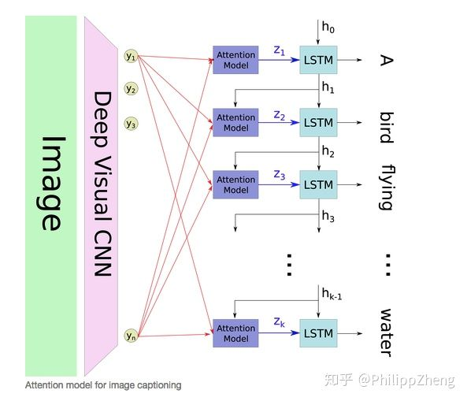
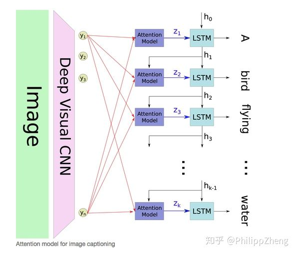文章提出了两种attention模式，即hard attention 和soft attention，来感受一下这两种attention，
 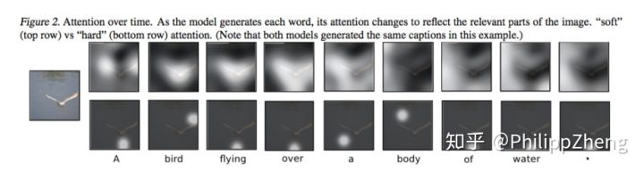
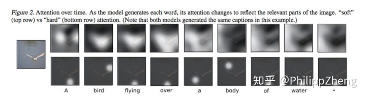可以看到，hard attention会专注于很小的区域，而soft attention的注意力相对发散。模型的encoder利用CNN(VGG net)，提取出图像的 个
维的向量
,每个向量表示图像的一部分信息。decoder是一个LSTM，每个timestep
的输入包含三个部分，即context vector
、前一个timestep的hidden state
、前一个timestep的output
。
由{
}和权重{
}通过加权得到。这里的权重
通过attention模型
来计算得到，而本文中的
是一个多层感知机(multilayer perceptron)。
 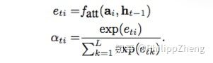
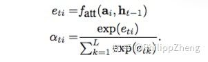从而可以计算 。接下来文章重点讨论hard(也叫stochastic attention)和soft(也叫deterministic)两种attention模式。
1) Stochastic “Hard” Attention
记 为decoder第
个时刻的attention所关注的位置编号，
表示第
时刻attention是否关注位置
，
服从多元伯努利分布(multinoulli distribution)， 对于任意的
，
中有且只有取1，其余全部为0，所以
是one-hot形式。这种attention每次只focus一个位置的做法，就是“hard”称谓的来源。
也就被视为一个变量，计算如下,
 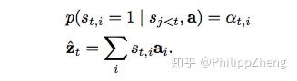
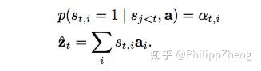问题是 怎么算呢？把
视为隐变量，研究模型的目标函数，进而研究目标函数对参数的梯度。直观理解，模型要根据
来生成序列
，所以目标可以是最大化log
，但这里没有显式的包含
，所以作者利用著名的Jensen不等式(Jensen's inequality)对目标函数做了转化，得到了目标函数的一个lower bound，如下
 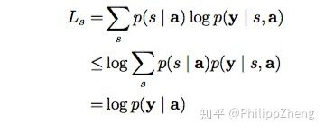
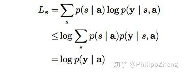这里的 ={
}，是时间轴上的重点focus的序列，理论上这种序列共有
个。
然后就用log 代替原始的目标函数，对模型的参数
算gradient。
 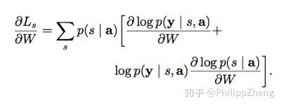
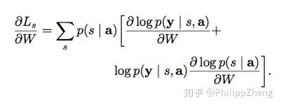然后利用蒙特卡洛方法对 进行抽样，我们做
次这样的抽样实验，记每次取到的序列是
，易知
的概率为
，所以上面的求gradient的结果即为
 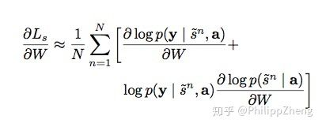
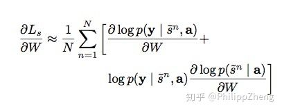接下来的一些细节涉及reinforcement learning，感兴趣的同学可以去看这篇paper。
2）Deterministic “Soft” Attention
说完"硬"的attention，再来说说“软”的attention。
相对来说soft attention很好理解，在hard attention里面，每个时刻 模型的序列 [
] 只有一个取1，其余全部为0，也就是说每次只focus一个位置，而soft attention每次会照顾到全部的位置，只是不同位置的权重不同罢了。这时
即为
的加权求和
这样soft attention是光滑的且可微的（即目标函数，也就是LSTM的目标函数对权重 是可微的，原因很简单，因为目标函数对
可微，而
对
可微，根据chain rule可得目标函数对
可微）。
文章还对这种soft attention做了微调， ，其中
，
用来调节context vector在LSTM中的比重（相对于 、
的比重）。
btw，模型的loss function加入了 的正则项，
 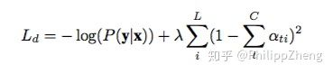
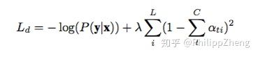2. 论文 Effective Approaches to Attention-based Neural Machine Translation
[1508.04025] Effective Approaches to Attention-based Neural Machine Translation文章提出了两种attention的改进版本，即global attention和local attention。
先感受一下global attention和local attention长什么样子
 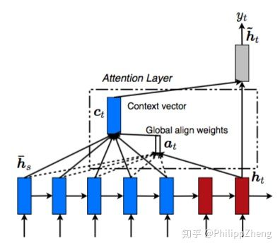
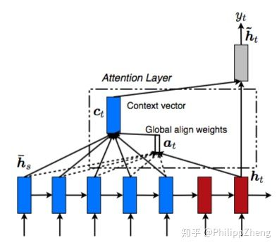 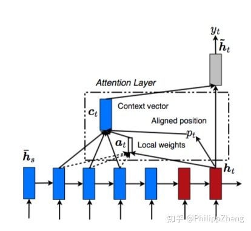
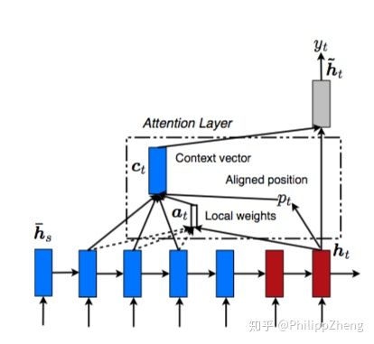文章指出，local attention可以视为hard attention和soft attention的混合体（优势上的混合），因为它的计算复杂度要低于global attention、soft attention，而且与hard attention不同的是，local attention几乎处处可微，易与训练。
文章以机器翻译为场景， 为source sentence，
为target sentence，
为encoder产生的context vector，objective function为
 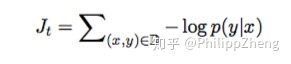
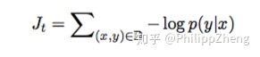 来源于encoder中多个source position所产生的hidden states，global attention和local attention的主要区别在于attention所forcus的source positions数目的不同：如果attention forcus全部的position，则是global attention，反之，若只forcus一部分position，则为local attention。
由此可见，这里的global attention、local attention和soft attention并无本质上的区别，两篇paper模型的差别只是在LSTM结构上有微小的差别。
在decoder的时刻 ，在利用global attention或local attention得到context vector
之后，结合
，对二者做concatenate操作，得到attention hidden state，
 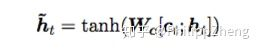
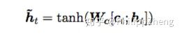最后利用softmax产出该时刻的输出
 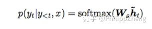
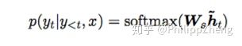下面重点介绍global attention、local attention。
1）global attention
global attention 在计算context vector 的时候会考虑encoder所产生的全部hidden state。记decoder时刻
的target hidden为
，encoder的全部hidden state为
，对于其中任意
，其权重
为
 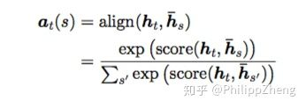
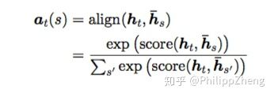而其中的 ，文章给出了四种种计算方法（文章称为alignment function)，
 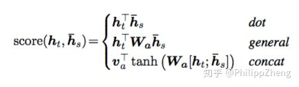
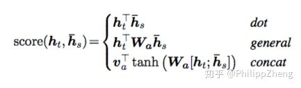 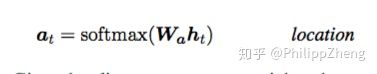
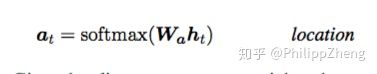四种方法都比较直观、简单。在得到这些权重后， 的计算是很自然的，即为
的weighted summation。
2) local attention
global attention可能的缺点在于每次都要扫描全部的source hidden state，计算开销较大，对于长句翻译不利，为了提升效率，提出local attention，每次只forcus一小部分的source position。
这里，context vector 的计算只forcus窗口
内的
个source hidden states(若发生越界，则忽略界外的source hidden states)。其中
是一个source position index，可以理解为attention的“焦点”，作为模型的参数，
根据经验来选择（文章选用10）。
关于 的计算，文章给出了两种计算方案，
i）Monotonic alignment (local-m)
ii) Predictive alignment (local-p)
 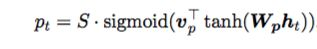
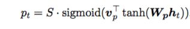其中 和
是模型的参数，
是source sentence的长度，易知
。
权重 的计算如下


可以看出，距离中心 越远的位置，其位置上的source hidden state对应的权重就会被压缩地越厉害。
3. 论文 neural machine translation by jointly learning to align and translate
[1409.0473v2] Neural Machine Translation by Jointly Learning to Align and Translate这篇文章没有使用新的attention结构，其attention就是soft attention的形式。文章给出了一些attention的可视化效果图，
 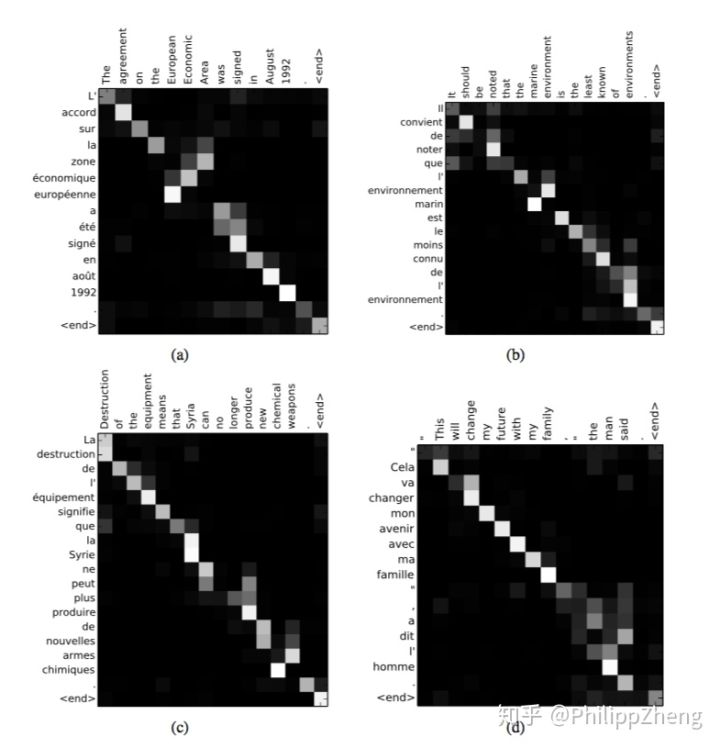
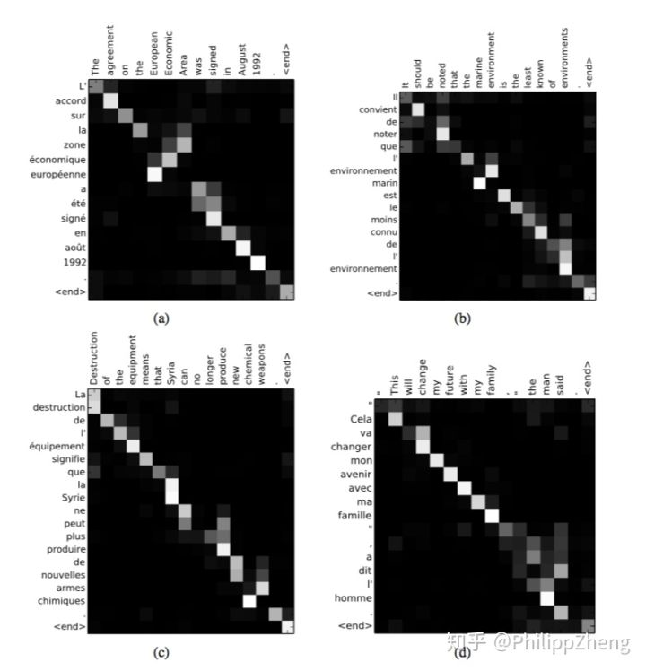上面4幅图中，x轴代表原始英文句子，y轴代表翻译为法文的结果。每个像素代表的是纵轴的相应位置的target hidden state与横轴相应位置的source hidden state计算得到的权重 ，权重越大，对应的像素点越亮。可以看到，亮斑基本处在对角线上，符合预期，毕竟翻译的过程基本是沿着原始句子从左至右依次进行翻译。
4. 论文 attention is all you need、weighted transformer network for machine translation
[1706.03762] Attention Is All You Need[1711.02132] Weighted Transformer Network for Machine Translation作者首先指出，结合了RNN(及其变体)和注意力机制的模型在序列建模领域取得了不错的成绩，但由于RNN的循环特性导致其不利于并行计算，所以模型的训练时间往往较长，在GPU上一个大一点的seq2seq模型通常要跑上几天，所以作者对RNN深恶痛绝，遂决定舍弃RNN，只用注意力模型来进行序列的建模。
作者提出一种新型的网络结构，并起了个名字 Transformer，里面所包含的注意力机制称之为 self-attention。作者骄傲地宣称他这套Transformer是能够计算input和output的representation而不借助RNN的唯一的model，所以作者说有attention就够了～
模型同样包含encoder和decoder两个stage，encoder和decoder都是抛弃RNN，而是用堆叠起来的self-attention，和fully-connected layer来完成，模型的架构如下，
 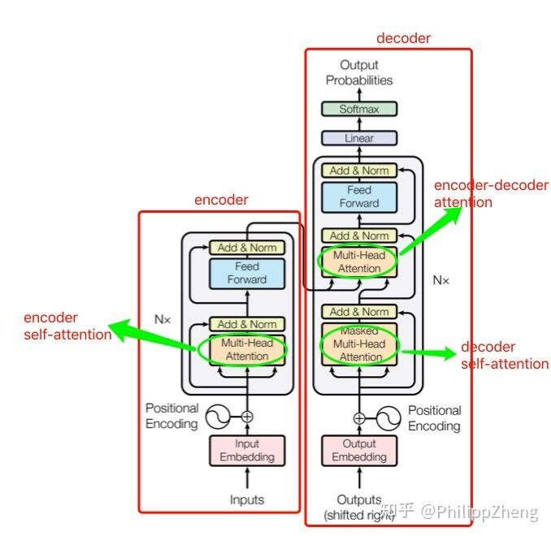
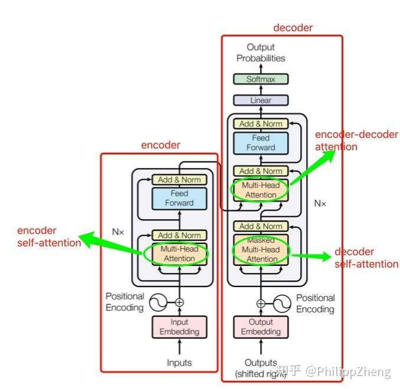从图中可以看出，模型共包含三个attention成分，分别是encoder的self-attention，decoder的self-attention，以及连接encoder和decoder的attention。
这三个attention block都是multi-head attention的形式，输入都是query 、key
、value
三个元素，只是
、
、
的取值不同罢了。接下来重点讨论最核心的模块 multi-head attention（多头注意力）。
multi-head attention由多个scaled dot-product attention这样的基础单元经过stack而成，
 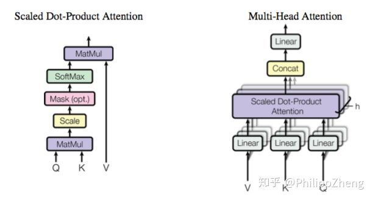
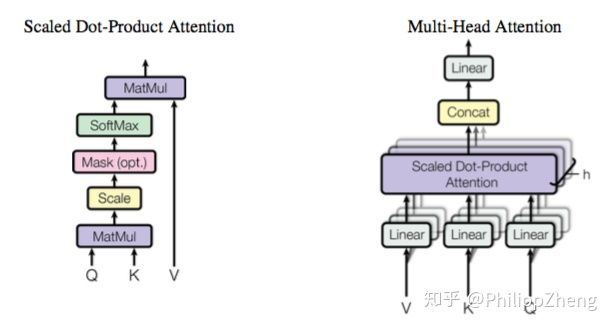那重点就变成scaled dot-product attention是什么鬼了。
按字面意思理解，scaled dot-product attention即 缩放了的点乘注意力，我们来对它进行研究。
在这之前，我们先回顾一下上文提到的传统的attention方法（例如global attention，score采用dot形式）
记decoder时刻 的target hidden state为
，encoder得到的全部source hidden state为
，则decoder的context vector
的计算过程如下，
作者先抛出三个名词 query 、key
、value
，然后计算这三个元素的attention
我的写法与论文有细微差别，但为了接下来说明的简便，我姑且简化成这样。这个Attention的计算跟上面的(*)式有几分相似。
那么 、
、
到底是什么？论文里讲的比较晦涩，说说我的理解。encoder里的attention叫self-attention，顾名思义，就是自己和自己做attention。抛开这篇论文的做法，让我们激活自己的创造力，在传统的seq2seq中的encoder阶段，我们得到
个时刻的hidden states之后，可以用每一时刻的hidden state
，去分别和任意的hidden state
计算attention，这就有点self-attention的意思。回到当前的模型，由于抛弃了RNN，encoder过程就没了hidden states，那拿什么做self-attention来自嗨呢？可以想到，假如作为input的sequence共有
个word，那么我可以先对每一个word做embedding吧？就得到
个embedding，然后我就可以用embedding代替hidden state来做self-attention了！所以
这个矩阵里面装的就是全部的word embedding，
、
也是一样。所以为什么管
叫query？就是你每次拿一个word embedding，去“查询”其和任意的word embedding的match程度(也就是attention的大小)，你一共要做
轮这样的操作。 我们记word embedding的dimension为
，所以
的shape就是
，
、
也是一样，第
个word的embedding为
，所以该word的attention应为
那同时做全部word的attention，则是
scaled dot-product attention基本就是这样了。基于RNN的传统encoder在每个时刻会有输入和输出，而现在encoder由于抛弃了RNN序列模型，所以可以一下子把序列的全部内容输进去，来一次self-attention的自嗨～
理解了scaled dot-product attention之后，multi-head attention就好理解了，因为就是scaled dot-product attention的stacking。先把 、
、
做linear transformation，然后对新生成的
、
、
算attention，重复这样的操作
次，然后把
次的结果做concat，最后再做一次linear transformation，就是multi-head attention这个小block的输出了。
 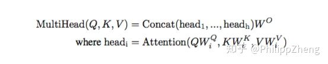
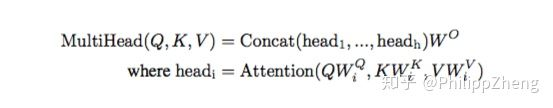以上介绍了encoder的self-attention。decoder中的encoder-decoder attention道理类似，可以理解为用decoder中的每个 对encoder中的
做一种交叉attention。decoder中的self-attention也一样的道理，只是要注意一点，decoder中你在用
对
做attention时，有一些pair是不合法的！原因在于，虽然encoder阶段你可以把序列的全部word一次全输入进去，但是decoder阶段却并不总是可以，想象一下你在做inference，decoder的产出还是按从左至右的顺序，所以你的
是没机会和
(
)做attention的。那怎么将这一点体现在attention的计算中呢？文中说只需要令
即可，为何？因为这样的话，
所以在计算 的self-attention的时候，就能够把
屏蔽掉～
所以这个问题也就解决了～～～
模型的其他模块，诸如position-wise feed-forward networks、position encoding、layer normalization、residual connection等，相对容易理解，感兴趣的同学可以去看paper，此处不再赘述。
总结
本文对 attention的五种结构，即hard attention、soft attention、global attention、local attention、self-attention进行了具体分析。五种attention在计算复杂度、部署难度、模型效果上会有一定差异，实际中还需根据业务实际合理选择模型。
参考文献：
Attention Mechanism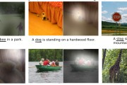2. Show, Attend and Tell: Neural Image Caption Generation with Visual Attention
3. Effective Approaches to Attention-based Neural Machine Translation
4. neural machine translation by jointly learning to align and translate
5. attention is all you need
6. weighted transformer network for machine translation
7. sequence to sequence learning with neural networks
还没有评论